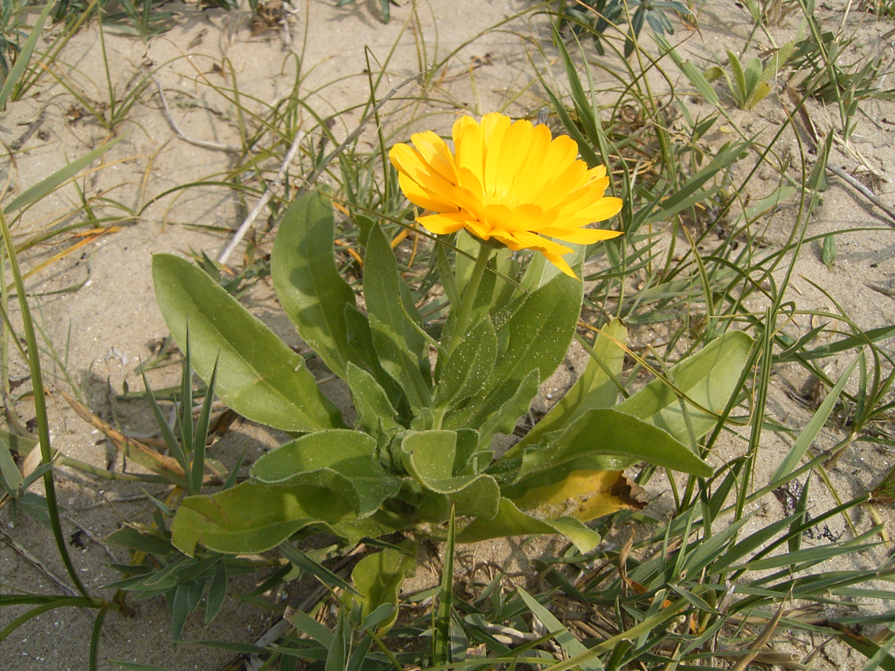

Calendula officinalis
common name: calendula, marigold
en español: caléndula
plant family: Asteraceae (aster)
parts used: dried flowers  from Wikimedia Commons by TeunSpaans - Own work, public domain
observations/description
dried flowers
- bright yellow, goldenrod ring flowers, some with calyx attached
- warm, bright, full aroma slightly reminscent of chrysanthemum
"Calendula officinalis", Wikipedia
- leaves are long, hairy on both sides, with margins entirely/occasionally waved or weakly toothed
- inflorescences are yellow or orange, comprising a thick flowerhead surrounded by two rows of hairy bracts
- in the wild plant they have a single ring of ray florets surrounding the central disc florets
- disc florets are tubular and hermaphroditic, and a more intense orange-yellow color than the female, tridentate, peripheral ray florets
- flowers may appear all year long where conditions are suitable
distribution/conservation status
"Calendula officinalis", Wikipedia
- probably native to southern Europe, though its long history of cultivation makes its precise origin unknown
- widely naturalised further north in Europe (as far north as southern England) and elsewhere in warm temperate regions of the world
primary actions
The Yoga of Herbs, p. 198
- vulnerary, antispasmodic, alterative
The Modern Herbal Dispensatory, p. 200-1
- astringent, vulnerary
Spiritual Herbalism, p. 132-3
- anti-inflammatory, antispasmodic, astringent, vulnerary, emmenagogue, antimicrobial, antifungal, alterative, bitter, cholagogue, diaphoretic, anthelmintic, antiviral, hemostatic
notes from class, 27 Jan 2025
- antifungal, antimicrobial, antibacterial, antispasmodic, astringent, demulcent, cholagogue, lymphatic, immune tonic, hepatic
system affinities
integumentary, digestive, reproductive, lymphatic, cardiovascular
primary uses
The Modern Herbal Dispensatory, p. 200-1
- used topically to speed tissue healing and ease mild pain after injuries, bruises, and burns
- useful remedy for dry skin, eczema, and hemorrhoids
- remedy for gastrointestinal inflammation: almost specific for Crohn's disease, colitis, and gastritis
- enfeebled conditions of the capillary blood vessels
- excellent application to ulcers and wounds
The New Age Herbalist, p. 46
- antiseptic and antibacterial: compress/poultice is excellent first aid for burns, scalds, stings, and impetigo
- compress can be used on varicose veins and chilblains
- infusion can be used as eyewash for conjunctivitis
- antifungal, can be used to treat trush/candida
- sap from the stem used to treat warts, callouses, and corns
- remedy for inflamed or ulcerated conditions, whether external (poultice on variose ulcers) or internally to treat gastritis or gastric or duodenal ulcers
- stimulates flow of bile
- allays painful menstruations, brings on delayed periods
Spiritual Herbalism, p. 132-3
- repairs and heals broken skin, aids in building healthy granular skin tissue and reduces inflammation
- external uses:
- heals and clears inflammation, heals wounds, cuts, bruises
- treats burns, sores, rashes, warts, fungal infections, ulcers
- use on chickenpox/shingles
- treat eye infections
- vaginal steam or sitz bath for hemorroids
- internal uses:
- treats fungal infections (e.g., candida)
- treats gastritis, gastric ulcers, and hemorrhoids
- supports female reproductive cycle, regulates periods
- supports cold/flu recovery through diaphoretic action
- supports liver issues like hepatitis and jaundice
notes from class, 27 Jan 2025
- good for ulcerative colitis, candida, yeast, leaky gut, IBD/IBS, food poisoning, dysentery
- has an affinity for oil deposits and lymph
- slightly bitter
energetics
The Yoga of Herbs, p. 198
- reduces pitta, kapha; increases vāta
- bitter/pungent taste - pungent post-digestive effect
- cooling
The Modern Herbal Dispensatory, p. 200-1
- cooling, drying, constricting
Spiritual Herbalism, p. 132-3
- yang, spicy, bitter, neutral, cool
notes from class, 27 Jan 2025
- contains many tastes
- warming and drying
pharmacology
The New Age Herbalist, p. 46
- carotenoids, resin, essential oil, flavonoids, sterol, bitter principles, saponins, mucilage
Spiritual Herbalism, p. 132-3
- essential oils, saponins, resin, bitter principles, triterpenoids, flavonoids
contraindications/pharmaceutical interactions/warnings
The Modern Herbal Dispensatory, p. 200-1
- internal use is contraindicated during pregnancy (topical use safe)
The New Age Herbalist, p. 46
- avoid during pregnancy
Spiritual Herbalism, p. 132-3
- do not use during early pregnancy due to emmenagogue action
- clean wounds thoroughly before applying calendula because it causes rapid healing and can seal dirt into wounds
preparations
- tisane
- macerate
- compress/poultice
- tincture
- glycerite
- oil/salve
dosage
The Modern Herbal Dispensatory, p. 200-1
- infusion: 4-8 oz, 3/day
- tincture: 1-3 mL, 3/day
- glycerite: 5-10 mL, 3/day
extra information
The Modern Herbal Dispensatory, p. 200-1
- common name 'marigold' connects the reference to the Virgin Mary with calendula's emmenagogue action
Spiritual Herbalism, p. 132-3
- also called bride of the sun
- noted as clearing the eyesight and head and encouraging cheerfulness as early as the twelfth century
- as 'marigold', it is dedicated to the Virgin Mary
- historal use as a plant dye
notes from class, 27 Jan 2025
- want to make sure to get the whole flower, with calyx; not just petals
personal experiences/simples
tisane (1 tsp: 8 oz, 10-15 minutes), dried flowers
- savory, bitter (maybe from oversteeping)
- sensation is round, open
- has a quality of taste that i am associating with detoxification/alterative property
- energy is downward; i feel calmer, almost a bit high - nervine effect?
macerate (1 tbsp: 12 oz, 10 hours), dried flowers
- more hay taste, sweeter and more bitter and more savory - more flavor overall
- reminscent of saffron
- feels cooling
- i took this after a large meal and it felt like it soothed my very full stomach
- flavor is reminscent of masa/corn flakes
tincture (1:5, 70% alcohol, 4 weeks), dried flowers
- extremely dark/deep yellow color to the point of reddish brown
- very pleasant aroma, quite floral like chamomile along with the masa/corn aroma of calendula
- does not smell much of alcohol despite the high alcohol content
- extremely buoyant in the mouth
- nice, concentrated calendula flavor
- floral and masa up front, deep bitterness surrounds the tongue in a long aftertaste/mouthfeel
- feels powerful
- i had a dream/vision of making fresh whole plant calendula tincture... wonder where this will go
- i think this could be the gentle daily alterative/cholagogue support i have been looking for
- is the astringency too much for daily use/too much risk of overstimulating vāta for me?
- drying on the mouth/throat
- put a dose (~ 0.5 tsp ≈ 2.5 mL) in a 12 oz blackberry sparkling water and this mitigated the dryness
- at first i could not taste the tincture at all, but it became more pronounced as i drank (delicous throughout)
- may still dilute in less sparkling water, maybe 8 oz
witchcraft
Spiritual Herbalism, p. 132-3
- brings light of the sun to dark places
- connects us to joy; useful during times of loss or grief or seasonal depression
- heals through adding love, joy, and warmth rather than purging/stripping things away
- helps communication
- the light exposes/reduces superficial speech patterns and listening to respond rather than connect
- increases understanding and receptivity, encourages warmth and sensitivity
- e.g., place calendula in a bowl where there are difficult conversations to be had
- planetary influences: sun, fire
recipes
sources
"Calendula officinalis" on Wikipedia. Retrieved 6 May 2025.
Easely, Thomas and Steven Horne. The Modern Herbal Dispensatory (2016)
Frawley, David and Vasant Lad. The Yoga of Herbs: An Ayurvedic Guide to Herbal Medicine (1986)
Goldberg Blackthorn, Samantha and Shona MacDougall. Ace of Cups Herbal Medicine and Botanical Magic Herbal School (2024)
Mabey, Richard et al. The New Age Herbalist (1988)
Rose, Karen M. The Art & Practice of Spiritual Herbalism (2022)